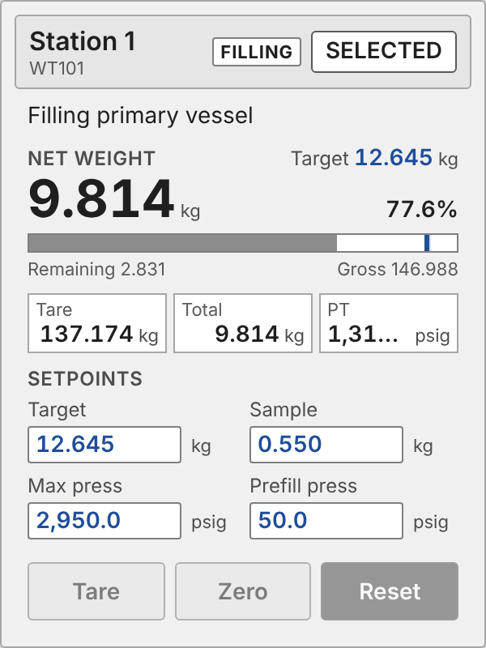

<figure class="card" id="Templates_Station_Station_Fill"><div class="view" style="width:240px;height:320px"><div class="stage" style="width:300px;height:400px;transform:scale(0.8000)"><div class="hit" style="position:absolute;inset:0;pointer-events:none" title="click: open dynamic window"></div></div></div><figcaption><code>Templates/Station/Station_Fill</code><br><b class="ok">T_Station</b> &middot; dynamic window <code>dw_Station</code><br>no click target: full station panel (screen content, not a symbol)<br><i>render of the real view</i></figcaption></figure>